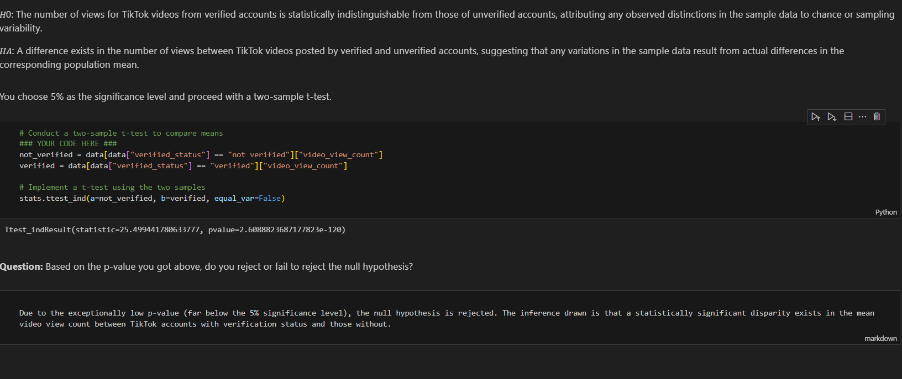
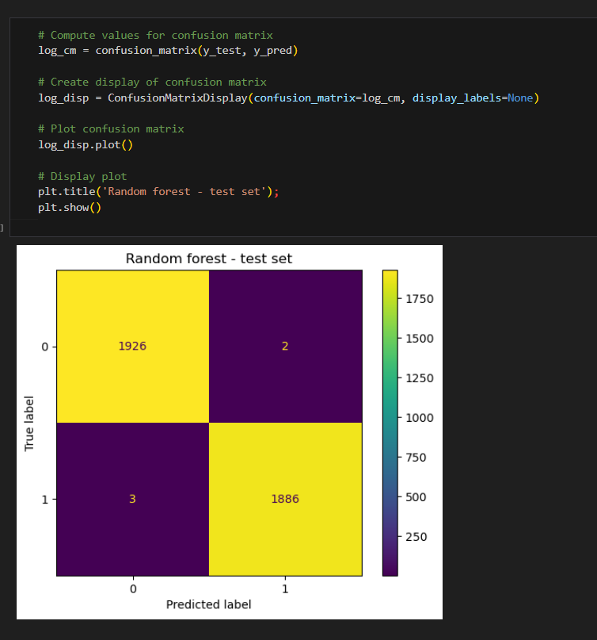

TikTok Classification Project(2024)

For a detailed view of the code, check out the GitHub repository:
View the Code on GitHub
Go Back To Menu
TikTok Classification
I employed the PACE (Project, Analyze, Communicate, Execute) strategy across the six steps, systematically addressing questions, detailing actions, and ensuring a comprehensive approach to the TikTok claims classification project. I navigated through project milestones, built a data frame, conducted exploratory data analysis, tested hypotheses, developed a regression model, and created the final machine learning model for TikTok's claims classification project. These steps involved planning, data cleaning, stakeholder engagement, and model building, showcasing my proficiency in various facets of advanced data analytics within a realistic workplace scenario.
Milestone 1:
Project Proposal and Milestones
The purpose is to develop a machine learning model for claims classification on TikTok, aiming to automate the identification of claims and opinions in user-generated content. This will enhance content moderation efficiency, improve the user experience, optimize resource allocation, and strengthen platform trust by ensuring a safer and more positive environment.
Objective: Organize project tasks, classify tasks using the PACE workflow, and identify relevant stakeholders for the claims classification project.
Key Deliverables:Project proposal outlining milestones, PACE classification, and stakeholder identification.
Project Documents:
Project Proposal PDFProject Activity Template PDF
Milestone 2:
Building Data Frame and Descriptive Statistics
Objective: Build a data frame for the TikTok dataset, examine the data types of each column, and gather descriptive statistics.
Key Deliverables:Completed data frame and descriptive statistics for exploratory data analysis (EDA).
The Purpose of this project is to investigate and understand the data provided.
1. Acquaint you with the data
2. Compile summary information about the data
3. Begin the process of EDA and reveal insights contained in the data
4. Prepare you for more in-depth EDA, hypothesis testing, and statistical analysis
The goal is to construct a dataframe in Python, perform a cursory inspection of the provided dataset, and inform TikTok data team members of your findings.
This Milestone has three parts:
Part 1: Understand the situation
1. How can you best prepare to understand and organize the provided TikTok information?
Part 2:Understand the data
1.Create a pandas dataframe for data learning and future exploratory data analysis (EDA) and statistical activities
2.Compile summary information about the data to inform next steps
Part 3: Understand the variables
1.Use insights from your examination of the summary data to guide deeper investigation into variables

Sample Data
Calculated the mean video share count of ban status to understand the data

Video share count mean
Project Documents:
Key Insights:Out of the 19,382 samples in this dataset, claims constitute just under 50%, specifically 9,608 instances. There is a notable strong correlation between claim status and engagement level, warranting further investigation. Moreover, videos with banned authors exhibit significantly higher engagement compared to videos with active authors, while videos with authors under review fall between these two categories in terms of engagement levels.
Pace stratergy PDFExecutive summary PDF
Milestone 3:
Exploratory Data Analysis and Data Cleaning:
Objective: Conduct EDA on claims classification data, select and build visualizations, and create plots to visualize variables and relationships..
Key Deliverables:EDA results and visualizations were shared with the TikTok team..
The purpose of this project is to conduct exploratory data analysis on a provided data set. My mission is to continue the investigation I began in Milestone 2 and perform further EDA on this data with the aim of learning more about the variables. Of particular interest is information related to what distinguishes claim videos from opinion videos.
The goal is to explore the dataset and create visualizations.
This Milestone has 4 parts:
Part 1: Imports, links, and loading
Part 2: Data Exploration and Data cleaning
Part 3: Build visualizations
Part 4: Evaluate and share results
Created histogram to show claims by verification status

bar chart
There are far fewer verified users than unverified users, but if a user *is* verified, they are much more likely to post opinions.
Created histogram to show claims status by author ban status

Count of each claim status
For both claims and opinions, there are many more active authors than banned authors or authors under review; however, the proportion of active authors is far greater for opinion videos than for claim videos. Again, it seems that authors who post claim videos are more likely to come under review and/or get banned.
Created Scatterplot from the data to differentiate between claims status and opinion status

Scatter plot
Key Insights:1.I examined the data distribution/spread, count frequencies, mean and median values, extreme values/outliers, missing data, and more. I analyzed correlations between variables, particularly between the claim_status variable and others.
2. I want to further investigate distinctive characteristics that apply only to claims or only to opinions. Also, I want to consider other variables that might be helpful in understanding the data.
Project Documents:
Pace stratergy PDFExecutive summary PDF
Milestone 4:
Hypothesis testing
Objective:Conduct hypothesis testing on the claims classification data to determine the best method for the project.
Key Deliverables:Results of hypothesis testing insights into TikTok's user claim dataset.
The purpose of this project is to demostrate knowledge of how to prepare, create, and analyze hypothesis tests.
The goal is to apply descriptive and inferential statistics, probability distributions, and hypothesis testing in Python.
This Milestone has three parts:
Part 1: Imports and data loading* What data packages will be necessary for hypothesis testing?
Part 2: Conduct hypothesis testing
* How will descriptive statistics help you analyze your data?
* How will you formulate your null hypothesis and alternative hypothesis?
Part 3: Communicate insights with stakeholders
* What key business insight(s) emerge from your hypothesis test?
* What business recommendations do you propose based on your results?
Conducted hypothesis testing by choosing 5% of significance level and perfomed two sample t_test
Due to the exceptionally low p-value (far below the 5% significance level), the null hypothesis is rejected. The inference drawn is that a statistically significant disparity exists in the mean video view count between TikTok accounts with verification status and those without.
Project Documents:
Key Insights:The analysis reveals a significant statistical difference in average view counts between videos from verified and unverified accounts, indicating potential fundamental behavioral distinctions. Exploring the root causes of this difference is imperative, considering factors like content type or associations with spam bots. The subsequent phase involves constructing a logistic regression model on verified_status to predict user behavior accurately, addressing the skewed data and significant account type differences.
Pace stratergy PDFExecutive summary PDF
Milestone 5:
Regression Model Building
Objective:Create a regression model for the claims classification data, evaluate the model, and interpret results for cross-departmental stakeholders.
Key Deliverables:Regression model, evaluation, and summarized findings for stakeholders within TikTok.
The purpose of this project is to demostrate knowledge of EDA and regression models.
The goal is to build a logistic regression model and evaluate the model.
This activity has three parts:
Part 1: EDA & Checking Model Assumptions
* What are some purposes of EDA before constructing a logistic regression model?
Part 2: Model Building and Evaluation
* What resources do you find yourself using as you complete this stage?
Part 3: Interpreting Model Results
* What key insights emerged from your model(s)?
* What business recommendations do you propose based on the models built?
Created stacked histograms to visualize the text_length for both verified and unverified accounts

Encoding categorical features in the training set

Created correlation using heat map

we could exclude video_like_count. And among the variables that quantify video metrics, you could keep video_view_count, video_share_count, video_download_count, and video_comment_count as features.
Created confusion Matrix to visualize the results of Logistic Regression model

Classification report to show precision

Key Insights:The dataset contains strongly correlated variables, prompting the exclusion of "video_like_count" to address potential multicollinearity issues in logistic regression. The model indicates that each additional second of the video corresponds to a 0.009 increase in the log-odds of a user having verified status, with acceptable predictive power reflected in a precision of 61%, a good recall of 84%, and overall accuracy within an acceptable range.
Milestone 6:
Final Machine Learning model
Objective:Lead the final tasks of the claims classification project, including feature engineering, model development, and evaluation.
Key Deliverables:Machine learning model, evaluation results, and an executive summary for cross-departmental stakeholders.
TikTok users can report videos that they believe violate the platform's terms of service. Because there are millions of TikTok videos created and viewed every day, this means that many videos get reported—too many to be individually reviewed by a human moderator. Analysis indicates that when authors do violate the terms of service, they're much more likely to be presenting a claim than an opinion. Therefore, it is useful to be able to determine which videos make claims and which videos are opinions. TikTok wants to build a machine learning model to help identify claims and opinions. Videos that are labeled opinions will be less likely to go on to be reviewed by a human moderator. Videos that are labeled as claims will be further sorted by a downstream process to determine whether they should get prioritized for review. For example, perhaps videos that are classified as claims would then be ranked by how many times they were reported, then the top x% would be reviewed by a human each day. A machine learning model would greatly assist in the effort to present human moderators with videos that are most likely to be in violation of TikTok's terms of service.
Previous work with this data has revealed that there are ~20,000 videos in the sample. This is sufficient to conduct a rigorous model validation workflow, broken into the following steps: 1. Split the data into train/validation/test sets (60/20/20) 2. Fit models and tune hyperparameters on the training set 3. Perform final model selection on the validation set 4. Assess the champion model's performance on the test set
Model Workflow

What are the ethical implications of building the model?
In the given scenario, it's better for the model to predict false positives when it makes a mistake, and worse for it to predict false negatives. It's very important to identify videos that break the terms of service, even if that means some opinion videos are misclassified as claims. The worst case for an opinion misclassified as a claim is that the video goes to human review. The worst case for a claim that's misclassified as an opinion is that the video does not get reviewed _and_ it violates the terms of service. A video that violates the terms of service would be considered posted from a "banned" author, as referenced in the data dictionary.
Built a random forest model to the training set. Used cross-validation to tune the hyperparameters and select the model that performs best on recall.
Random Forest Score

This model performs exceptionally well, with an average recall score of 0.995 across the five cross-validation folds. After checking the precision score to be sure the model is not classifying all samples as claims, it is clear that this model is making almost perfect classifications.
XGboostScore

This model also performs exceptionally well. Although its recall score is very slightly lower than the random forest model's, its precision score is perfect.
Created confusion Matrix to visualize the results of Classification model

The upper-left quadrant displays the number of true negatives: the number of opinions that the model accurately classified as so. The upper-right quadrant displays the number of false positives: the number of opinions that the model misclassified as claims. The lower-left quadrant displays the number of false negatives: the number of claims that the model misclassified as opinions. The lower-right quadrant displays the number of true positives: the number of claims that the model accurately classified as so. A perfect model would yield all true negatives and true positives, and no false negatives or false positives. As the above confusion matrix shows, this model does not produce any false negatives.
Classification report to show precision

The classification report above shows that the random forest model scores were nearly perfect. The confusion matrix indicates that there were 10 misclassifications—five false postives and five false negatives.
XGboostConfusion Matrix to Visualzie results and Classification Report

The results of the XGBoost model were also nearly perfect. However, its errors tended to be false negatives. Identifying claims was the priority, so it's important that the model be good at capturing all actual claim videos. The random forest model has a better recall score, and is therefore the champion model.
using Champion Model to predict on test data
Feature Importance Of Champion Model

The most predictive features all were related to engagement levels generated by the video. This is not unexpected, as analysis from prior EDA pointed to this conclusion.
Model Predictions
The model's most predictive features were all related to the user engagement levels associated with each video. It was classifying videos based on how many views, likes, shares, and downloads they received.
What features would you want to have that would likely improve the performance of your model?
The current version of the model does not need any new features. However, it would be helpful to have the number of times the video was reported. It would also be useful to have the total number of user reports for all videos posted by each author.
Project Documents:
Pace stratergy PDFExecutive summary PDF